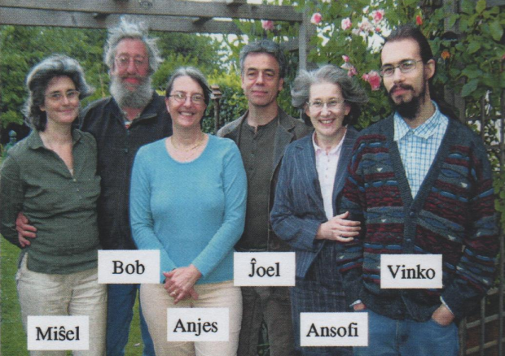
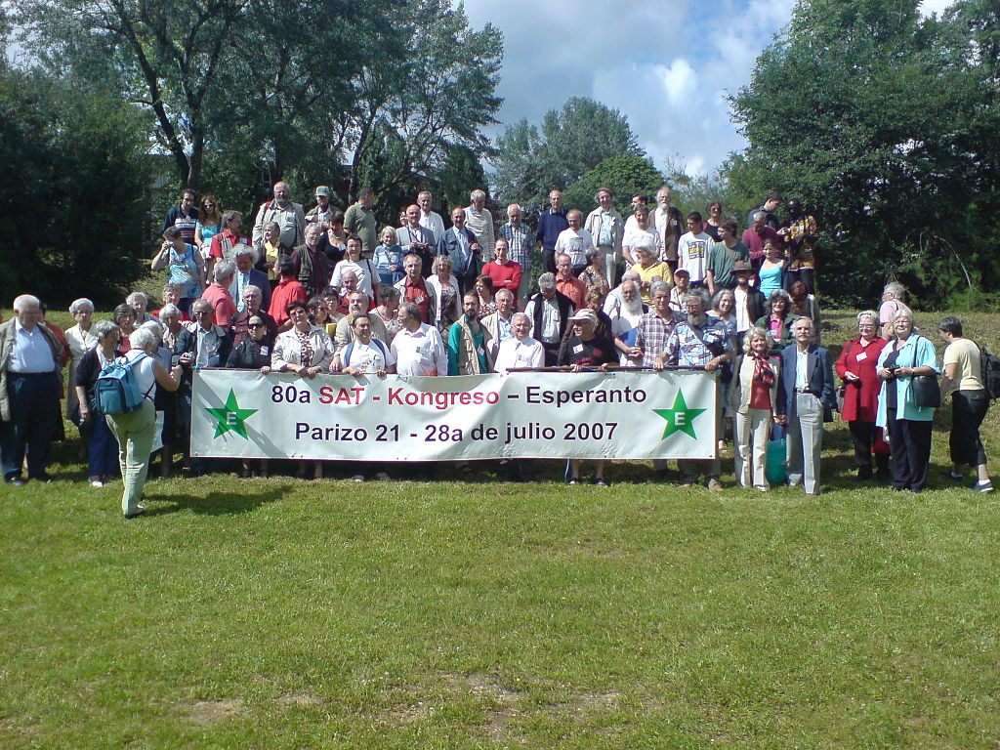
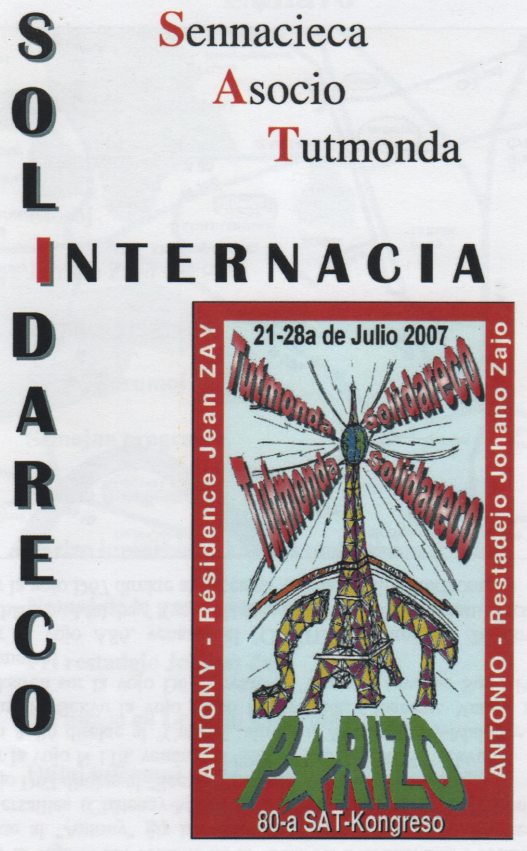

Le 80e congrès de SAT / La 80a SAT-kongreso
Début 2007, un petit groupe d'ILO appelé « OKK » (le commité d'organisation du congrès) s'est proposé pour organiser le 80e congrès de l'association mondiale SAT.
Le congrès s'est déroulé en région parisienne, à Antony, du 21 au 28 juillet 2007.
Cette entreprise restera une date mémorable pour notre association !
Komence de 2007, parto de ilanoj nomiĝita "OKK" (Organiza Kongresa Komitato) decidis organizi la 80an SAT-kongreso. La kongreso lokiĝis en Antonio, apud Parizo, je 21-28a Julio 2007.
La preparado de tiu okazaĵo restos memorinda por nia asocio!


